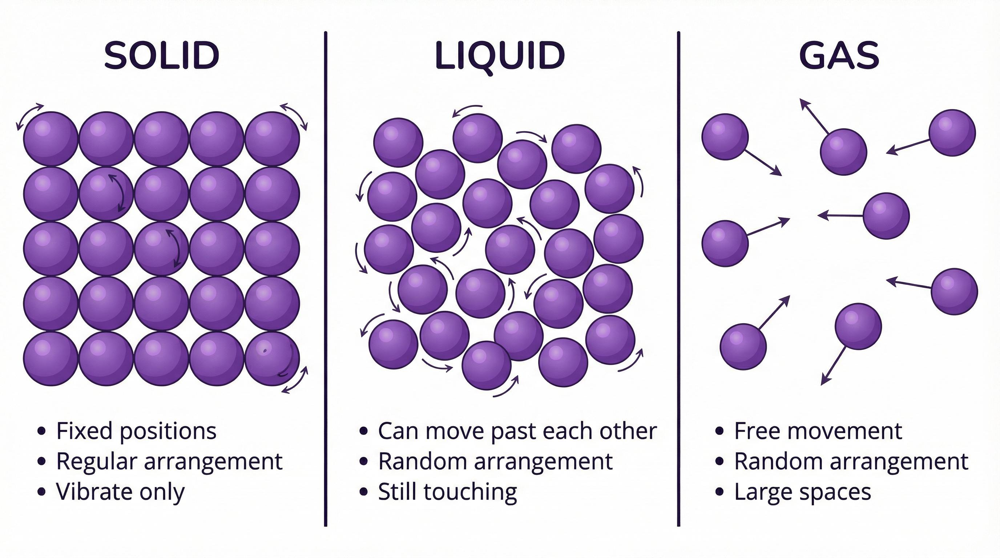
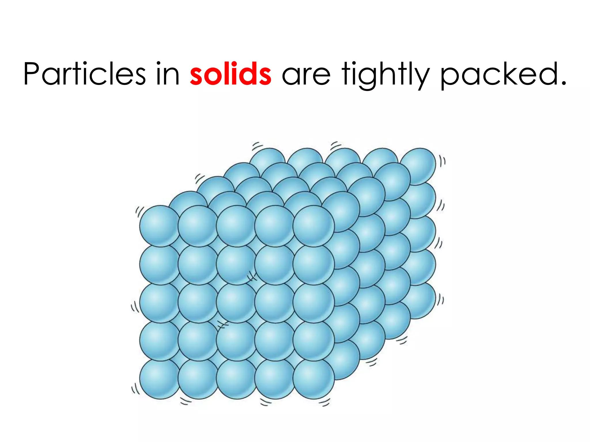
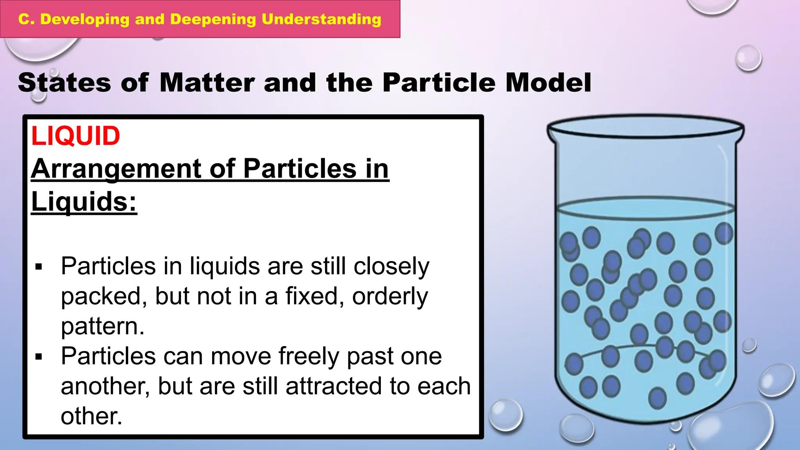
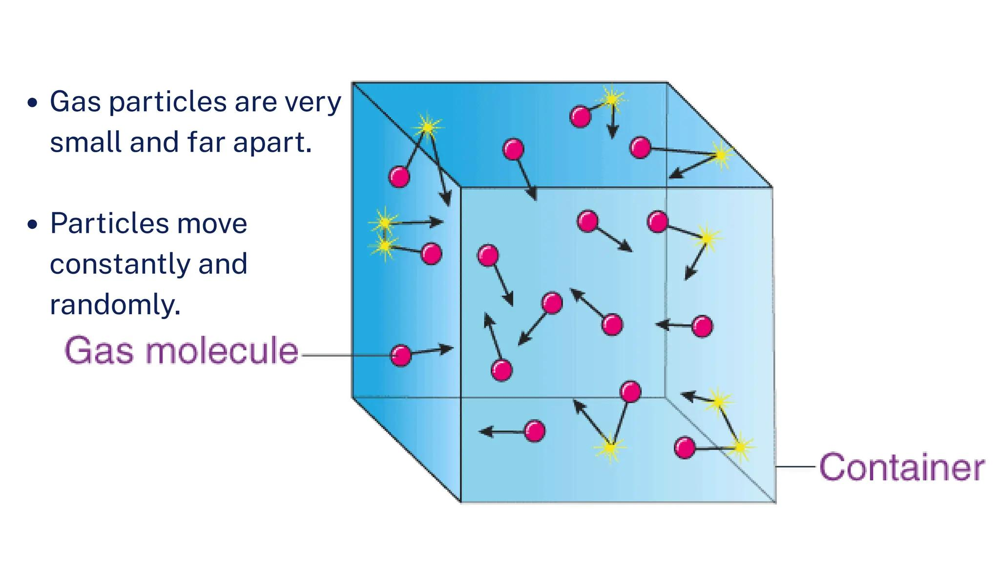
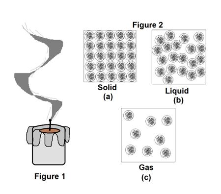
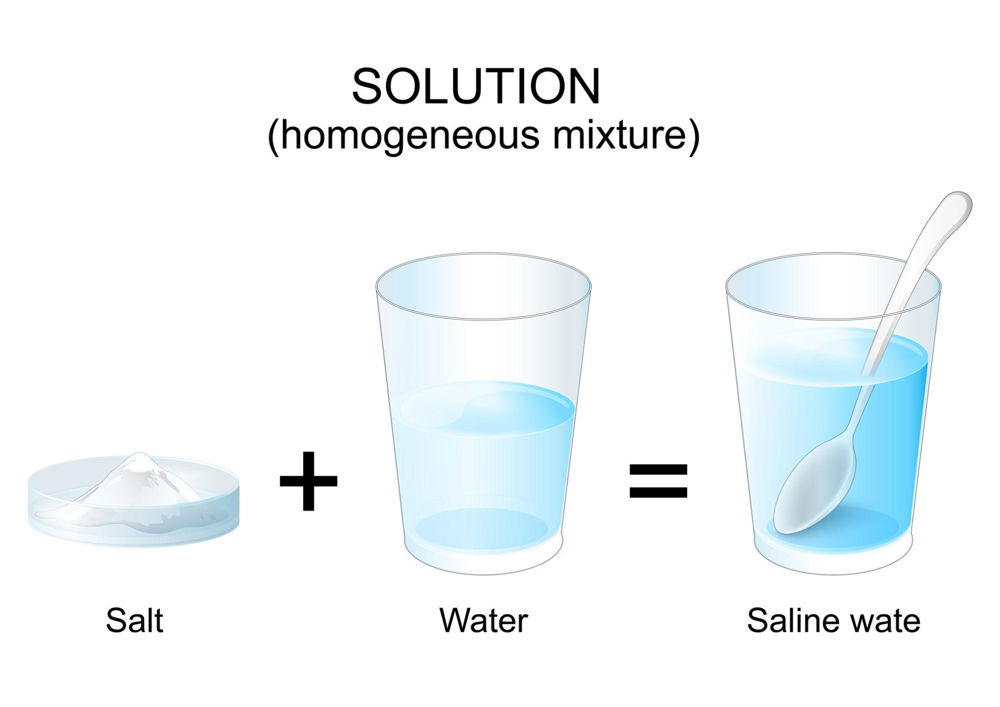
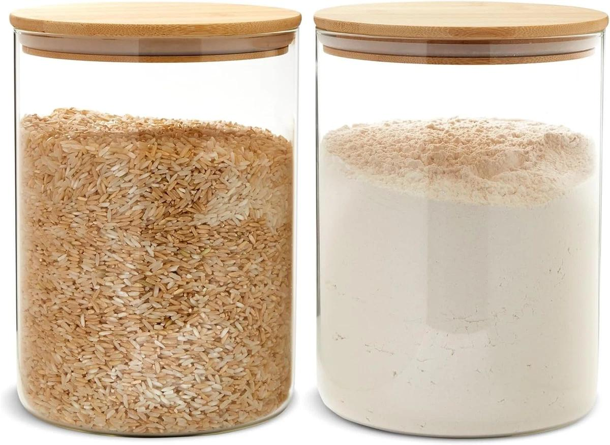

Class 8 Chapter 7: Particulate of Matter
Textbook Questions and Answers
1. Choose the Correct Option
Question 1. The primary difference between solids and liquids is that the constituent particles are:
- Closely packed in solids, while they are stationary in liquids.
- Far apart in solids and have fixed positions in liquids.
- Always moving in solids and have fixed positions in liquids.
- Closely packed in solids and move past each other in liquids.
Answer: Correct option (iv).
Explanation:
- In solids, particles are closely packed and remain in fixed positions. They only vibrate.
- In liquids, particles are less closely packed and can move past each other.
2. True or False
Question 2. Which of the following statements are true? Correct the false statements.
(i) Melting ice into water is an example of the transformation of a solid into a liquid.
Answer: True (T).
Ice changes from a solid state into a liquid state when heated. This process is called melting.
(ii) Melting process involves a decrease in interparticle attractions during the transformation.
Answer: True (T).
During melting, particles gain energy and the attractive forces holding them together become weaker.
(iii) Solids have a fixed shape and a fixed volume.
Answer: True (T).
Solids have a fixed shape and a fixed volume because their particles are closely packed.
(iv) The interparticle interactions in solids are very strong, and the interparticle spaces are very small.
Answer: True (T).
Solid particles are very close to each other and have strong attractive forces.
(v) When we heat camphor in one corner of a room, the fragrance reaches all corners of the room.
Answer: True (T).
Camphor changes directly into vapour. Its vapour spreads throughout the room by diffusion.
(vi) On heating, we are adding energy to the camphor, and the energy is released as a smell.
Answer: False (F).
Correct Statement: On heating, camphor absorbs energy and changes into vapour. The vapour spreads through the air, producing its characteristic smell.
3. What Happens If All Particles Are Removed?
Question 3. Choose the correct answer with justification. If we could remove all the constituent particles from a chair, what would happen?
- Nothing will change.
- The chair will weigh less due to lost particles.
- Nothing of the chair will remain.
Answer: Correct option (iii) – Nothing of the chair will remain.
Justification: A chair is made up of a large number of particles. If all its particles are removed, nothing of the chair will remain because matter is made up of particles.
4. Why Do Gases Mix Easily?
Question 4. Why do gases mix easily, while solids do not?
Answer:
Gases mix easily because:
- Gas particles are far apart from each other.
- They move freely and rapidly in all directions.
- They spread and mix with other gases easily.
Solids do not mix easily because their particles are closely packed and remain in fixed positions.
5. Why Does Milk Flow but a Glass Tumbler Maintain Its Shape?
Question 5. When spilled on the table, milk in a glass tumbler flows and spreads out, but the glass tumbler stays in the same shape. Justify this statement.
Answer:
- Milk is a liquid. Its particles can move past each other, so it flows and spreads on the table.
- A glass tumbler is a solid. Its particles are closely packed and have fixed positions.
Therefore, milk changes its shape according to the surface, but the glass tumbler maintains its shape.

6. Arrangement of Particles During Change of State
Question 6. Represent diagrammatically the changes in the arrangement of particles as ice melts and transforms into water vapour.
Answer:
When ice is heated, it changes into water and then into water vapour.
Three Stages:
- Ice (Solid): Particles are closely packed in a fixed arrangement.
- Water (Liquid): Particles are less closely packed and can move past each other.
- Water Vapour (Gas): Particles are very far apart and move freely.

Process:
Ice → Water → Water Vapour
Heating changes ice into water and then changes water into water vapour.
7. Particle Arrangement in Different Substances
Question 7. Draw a picture representing particles present in the following:
(i) Aluminium foil
Answer: Aluminium foil is a solid. Its particles are closely packed in a regular arrangement.

(ii) Glycerin
Answer: Glycerin is a liquid. Its particles are close together but are not arranged in fixed positions.

(iii) Methane Gas
Answer: Methane is a gas. Its particles are very far apart and move freely in all directions.

8. Different States of Wax in a Candle
Question 8. Observe Fig. 7.16a, which shows the image of a candle that was just extinguished after burning for some time. Identify the different states of wax in the figure and match them with Fig. 7.16b showing the arrangement of particles.
Answer:
Three states of wax can be identified in the candle:
-
Solid Wax:
The wax on the sides of the candle is solid. Its particles are closely packed. It matches the first diagram in Fig. 7.16b.
-
Liquid Wax:
The melted wax near the flame is liquid. Its particles are less closely packed and can move past each other. It matches the second diagram.
-
Wax Vapour:
Wax vapour is present near the wick during burning. Its particles are far apart. It matches the third diagram.

9. Why Does Ocean Water Taste Salty?
Question 9. Why does the water in the ocean taste salty, even though the salt is not visible? Explain.
Answer:
Ocean water tastes salty because it contains dissolved salts.
When salt dissolves in water:
- Salt breaks into very small particles called ions.
- These particles spread throughout the water.
- They become too small to be seen with our naked eyes.
- However, they make the water taste salty.
Therefore, ocean water tastes salty even though the salt is not visible.

10. Are Rice Grains and Rice Flour Solids or Liquids?
Question 10. Grains of rice and rice flour take the shape of the container when placed in different jars. Are they solids or liquids? Explain.
Answer:
Rice grains and rice flour are solids, not liquids.
Explanation:
- Each grain of rice is a solid and has a definite shape and volume.
- Rice flour consists of many tiny solid particles.
- These small particles can move and settle into the shape of the container.
- However, each individual particle remains a solid.
Therefore, rice grains and rice flour are solids even though they take the shape of the container.

11. Important Terms to Remember
| Term | Simple Meaning |
|---|---|
| Solid | Matter with a fixed shape and volume. |
| Liquid | Matter with a fixed volume but no fixed shape. |
| Gas | Matter with no fixed shape or volume. |
| Melting | Change of solid into liquid. |
| Evaporation | Change of liquid into gas. |
| Diffusion | Mixing of particles of different substances. |
| Interparticle Space | Space between particles. |
| Interparticle Attraction | Force of attraction between particles. |
| Sublimation | Direct change of solid into gas. |
12. Quick Revision – Answer Key
| Question | Correct Answer |
|---|---|
| Q1 | Option (iv). |
| Q2 (i) | True. |
| Q2 (ii) | True. |
| Q2 (iii) | True. |
| Q2 (iv) | True. |
| Q2 (v) | True. |
| Q2 (vi) | False. |
| Q3 | Option (iii). |
| Q4 | Gases mix easily because particles move freely. |
| Q5 | Milk is liquid; glass is solid. |
| Q6 | Solid → Liquid → Gas. |
| Q7 (i) | Solid. |
| Q7 (ii) | Liquid. |
| Q7 (iii) | Gas. |
| Q8 | Solid wax, liquid wax and wax vapour. |
| Q9 | Dissolved salt makes ocean water salty. |
| Q10 | Both are solids. |
13. Chapter Summary
Matter exists mainly in three states: solid, liquid and gas.
Solids
- Particles are closely packed.
- Particles have strong attraction.
- Solids have a fixed shape and volume.
Liquids
- Particles are less closely packed.
- Particles can move past each other.
- Liquids have a fixed volume but no fixed shape.
Gases
- Particles are far apart.
- Particles move freely in all directions.
- Gases have no fixed shape or volume.
Heating increases the energy of particles and can change matter from one state to another. Melting, evaporation and sublimation are examples of changes in the state of matter.
Message of the Chapter
Everything around us is made up of tiny particles. The arrangement, movement and attraction of these particles determine the properties of solids, liquids and gases.
MCQ Quiz
अध्याय के वस्तुनिष्ठ प्रश्नों का अभ्यास करें।
MCQ Quiz शुरू करेंPDF Notes
इस अध्याय के नोट्स PDF में पढ़ें या डाउनलोड करें।
📄 View PDF ⬇️ Download PDF